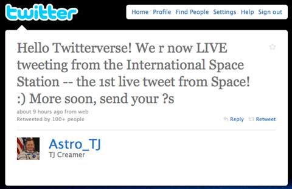
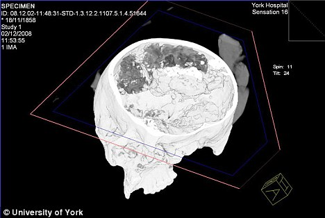

Publicado en 2011
Posibilidad de Agua Salada en Marte
- 2011-09-18
Después de un largo periodo de ausencia en el blog, vuelvo por estos lados a seguir publicando sobre los temas de la ciencia que tanto nos apasiona aprovechando la imagen que expuse en la sesiones del Club Orión del Parque Explora.

Resignación
- 2011-07-28
No sé qué sucede, con el tiempo algo extraño ocurre y no encuentro exactamente qué es.
Olvidarla
- 2011-07-28
De las titánicas fuerzas que esculpieron su imagen en la solida roca súbita e inesperadamente, solo espero que también se encarguen de su rápida y fugaz erosión y no quede rastro alguno de su monumento en las tierras del valle de mis sueños, así de esto quede un muro de lamentos que pronto cubrirá un volumen de agua salada.
Tweets extraterrestres
- 2011-07-26
Hace casi 2 semanas estaba mirando tuits en el Twitter oficial de NASA y me pareció curioso ver un tuit de uno de los astronautas que estaba en la última misión del transbordador Atlantis.
Gravitomagnetismo y Gravity Probe B
- 2011-07-07
Una de las teorías de mayor impacto, no solo a nivel científico sino también del «saber popular» ha sido la teoría de la relatividad de Einstein, que por cierto, su nombre el cuál no fue del agrado de su autor que consideraba la existencia de los absolutos, fue asignado por Max Planck.

Energía alternativa para dispositivos móviles
- 2011-07-07
Las fuentes de energía son parte vital de los sistemas que actualmente nos rodean… que si no la hay, bueno, desde las grandes estructuras hechas por hombre hasta las complejas formas de vida se degradarían, dejarían de funcionar y simplemente sucumben.

Cerebro prehistórico
- 2011-07-06
El cerebro, uno de los órganos tal vez de mayor importancia no solo por sus funciones sino por el interés por su compleja estructura, es un órgano de tejido bastante delicado. Sin embargo, hasta nuestros días se conocen algunos casos de cerebros bien preservados desde tiempos remotos.
ResearchGate, la red social de la ciencia
- 2011-05-11
Con el aumento del uso de la internet en nuestra vida diaria, constantemente hemos migrado todo tipo de actividades pertenecientes a esta al mundo virtual, conviertiéndonos de alguna manera en una nueva raza humana… un humano 2.0 llevando vidas 2.0.

20 años de Linux
- 2011-04-10
Hace 20 años, Linus Torvalds tomo la decisión de compartir su sistema operativo con el mundo. No mucho después, decidió licenciar este bajo General Public Licence (GPL). Este momento histórico cambio todo en el mundo en la historia de la computación.
La Tierra cambio después del terremoto de Japón
- 2011-03-13
Tal vez el título de la publicación dice poco, porque la Tierra siempre esta en un cambio continuo así no lo percibamos. Constantemente la masa de la Tierra aumenta por la deposición sobre ella de toneladas de material cósmico, como por ejemplo, el material de meteoros, meteoritos, aerolitos y otros durante las lluvias de estrellas. Así mismo, las interacciones gravitacionales con la luna y el sol deforman (despreciable) la superficie terrestre y frenan la rotación terrestre. Las placas tectónicas se desplazan, hunden y alzan continuamente. Pero bajo ciertos fenómenos, estos cambios son mas apreciables.
Imágenes de puntos cuánticos
- 2011-02-22
Por mas de una década investigadores han intentado crear pantallas de televisor a partir de puntos cuánticos. Teóricamente los puntos cuánticos podrían ofrecer imágenes de muy alta resolución y altos niveles de eficiencia energética frente a los actuales televisores.

A la búsqueda del bosón de Higgs
- 2011-02-21
Este mes de febrero los investigadores del LHC del CERN han renovado su búsqueda de uno de los misterios mas elusivos del universo, el bosón de Higgs. El bosón de Higgs es una hipotética partícula predicha por el modelo estándar de la física de partículas (la única de dicho modelo sin confirmación experimental) de gran energía y que cumple con la función de dotar de masa a las demás partículas existentes.
El planeta X
- 2011-02-20
Como sabemos, hace unos años considerábamos en nuestro sistema solar 9 planetas e incluso la cuenta llego a aumentar a 10, y dejar como candidatos a otros tantos. Esto motivo a una revisión del concepto planeta por parte de la IAU, que elimino a Plutón y al reciente candidato de la categoría de planetas y quedaron como planetas menores o planetoides.
Calculan masa del agujero negro más grande
- 2011-01-30
El astrónomo Karl Gebhardt de la University of Texas, Austin, presento los resultados de su equipo de investigación el 12 de enero en el encuentro 217 de la Sociedad Americana de Astronomía. Su equipo calculo la masa y horizonte de eventos del agujero negro de la galaxia M87 (NGC4486) (galaxia elíptica de magnitud aparente 8.6 ubicada a 55 millones de años luz en la constelación de virgo).
EteRNA
- 2011-01-15
Ya últimamente nos encontramos con una gran cantidad de actividades, servicios y contenidos en internet. Ya somos parte de la red, así no estemos en su interior como sucede en la película TRON, pero si nos absorbe una parte considerable de nuestro tiempo.
Superconductores borrachos
- 2011-01-11
Como muchos de los descubrimientos de la ciencia, algunos suelen ocurrir por mero accidente, algunos bastante inverosímiles de carácter meramente figurativo y de leyenda urbana para no mas decir que es un golpe de suerte.
2011: Año Internacional de la Química
- 2011-01-10
En 2008, Naciones Unidas declaro que el año 2011 sería reconocido como el Año Internacional de la Química (IYC 2011), conmemorando los logros alcanzados en la química, y sus contribución a la humanidad.
Sueños
- 2011-01-03
Son los sueños una realidad inimaginable, llena de grandes momentos de frenesí y éxtasis. Realidades nacidas de la manifestación de necesidad de estas o de rebeldía ante la realidad clásica que se nos ha condenado a vivir. Señales de advertencia, estados de reminiscencia de momentos de inconsciencia, escape desesperado de la realidad y sus problemas, en una búsqueda aguda de soluciones o viajes inconcebibles en el espacio-tiempo sin barreras físicas.